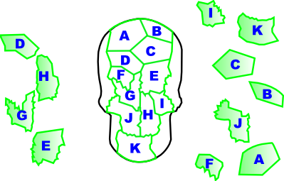
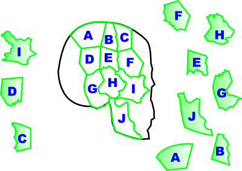
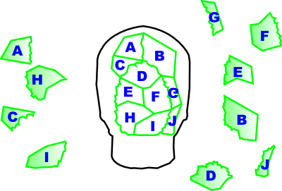
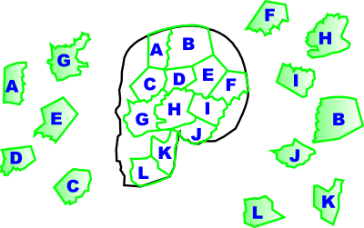

検視: ミラ・キミシマForensics: Naomi Kimishima
- 現在書きかけにつき、記述内容やデータが正しくない場合があります。
- 2密室の襲撃者/Locked-Room Mystery
-
PC
x @ x- 握られたナイフ
- 遺体の調査が可能になる
検査室：遺体
- 左手首の切創
- [1] ためらい傷が無い
- 左手手首の創傷
- 右手の人差し指
- [2] 骨折
- 変形した右手の指
- 右脇の痣
- 花柄のアザ
- 眼球
- [3] 赤い斑点
- 目の異常
PC
- リトル・ボーイ
- [3] デニスはこのナイフで傷を負った
- 凶器のナイフ
x @ x @ x x x- 凶器のナイフ
 左手手首の創傷
左手手首の創傷 - [1] デニスの手首はこのナイフで切られた
- ナイフで切った腕
x @ x x x x- 変形した右手の指
- ICレコーダに証言追加
x x @ x x x- 目の異常
- [2] 手首の傷
- 窒息の症状
ICレコーダ
- 証言者A -事件当時の隣室の様子-
- 7番のボイスを再生
- 隣の様子
PC
x x x @ @ x x- 男の死体 隣の様子
- [2] 15時までデニスは生きていた
- デニスの死亡時間
- ICレコーダに証言追加
ICレコーダ
- 証言者A
- 現場に誰か居なかったか
- 17番のボイスを再生
- 電気工が来ていた？
PC
- リトル・ボーイ
- [1] 骨を折ったのは死後
- 右手の骨折
x @ x @ x x x- 右手の骨折 ナイフで切った腕
- [2] 骨折した手でナイフを使った
- 怪我をした手
PCを抜けるとICレコーダに証言追加
ICレコーダ
- 証言者B -デニスの部屋に行った理由-
- 3番のボイスを再生
- 空調の修理
- 証言者B -デニスの様子は？-
- 10番のボイスを再生
- デニスは元気がなかった
PC
x x @ @ x x x x- 電気工が来ていた？ 空調の修理
- 電気工が来ていた
x x x x x @ @- デニスは元気が無かった デニスの死亡時間
- [1] 12時頃
- [3] 元気が無かった
- [2] 15時頃
- デニスの様子
- リトル・ボーイ
- [2] 火災
- [3] ナイフと手首の傷
- [1] 現場が密室だった事
- [2] ためらい傷がない
- [1] 右手でナイフを使った
- [3] 目の点状出血
事件現場解禁
事件現場
- 虫眼鏡
- 左壁面コルクボード上の写真
- 証言追加
- 虫眼鏡
- ベッドの血痕
- [1] 仰向け
- ベッドの血痕
- 虫眼鏡
- テーブル
- 部屋の燃えカス
- 虫眼鏡
- 天井のファン
- [3] 電気工が来ていた筈
- 何の修理？
自室
ICレコーダに証言追加
ICレコーダ
- 証言者C -事件当日の被害者について-
- 最後のボイスを再生
- ICレコーダを抜けると証言追加
- 証言者C
- 事件当日の被害者について
- 10番のボイスを再生
- 自慢のシャツ
検査室：遺留品
- Yシャツ
- 服はYシャツ
PC
x x | @ x @ x x x | x x x- 電気工が来ていた 何の修理？
- 電気工がした事
- ICレコーダに証言追加
x | x x @ x x | x x x x部屋の燃えカス
x | x x x @ x | x x @ x- 服はYシャツ 自慢のシャツ
- [1] 色が違う
- 服装の変化
x | x x x x x | x @ x- ベッドの血痕
- [3] この出血が死因とは言い切れない
- 少なめの出血
PCを抜けるとICレコーダに証言追加
ICレコーダ
- 証言者B -何を修理したのか？-
- 8番のボイスを再生
- [2] 季節が合わない
- 暖房の修理
- 証言者D -デニスの資金源について-
- 9番のボイスを再生
- デニスの資金源
ICレコーダを抜けるとALS解禁
事件現場
- テーブル左の床にALS塗布後に虫眼鏡
- 床の白い粉
- ベッド右の棚にALS塗布後に虫眼鏡
- 壁の隠し穴
PC
x x x | @ x x x x x x | x @ x- 暖房の修理 電気工がした事
- [3] 室内の空気循環
- シーリングファンの放置
x x | @ x @ x x x | x x x x- デニスの様子 デニスの資金源
- [2] 人格の落差が激し過ぎる
- デニスは密売人
x x | x x x x x x | x @ x- 床の白い粉
- [1] 麻薬は火災の直前に撒かれた
- 床に散った麻薬
x x | x x x @ x x | x @ x- 床に散った麻薬 壁の隠し穴
- [1] 麻薬
- [3] 麻薬の隠し場所
- [3] 火災後に部屋に入った
- [3] 麻薬は火災と同時期に撒かれた
- [1] 穴から取り出した時にこぼれた
- 消えた麻薬
- リトル・ボーイ
- ルミノール解禁
現場検証：デニスの部屋
- ルミノールでベッド手前の床を調査
- 床の血痕
- ルミノールでシーリングファンを調査
- 謎のロープ
- ルミノールでドアノブ付近を調査
- 緩んだネジ
- 血の付いたネジ
PC
- リトル・ボーイ
- [2] 火災の原因
- 燃えた化学物質
x x x | x x x @ x x x | x x x x- 血の付いたネジ
- [3] デニスを殺害した凶器が触れた
- [2] ドライバー
- 本当の凶器
x x x | x x x x x x x | x x @ x- 緩んだネジ
- [2] チェーンのみで施錠されて居た
- [1] ネジを1つ外す
- 密室のトリック
x x x | @ x @ x x x x | x x x x- シーリングファンの放置 謎のロープ
- シーリングファンが壊れた理由
x x x | x x x @ x x x | x @ x- シーリングファンが壊れた理由 燃えた化学物質
- [3] 熱
- [1] 火災を遅れて発生させる為
- [2] シーリングファンとロープ
- [3] デニスの遺体を発見させる
- [1] アリバイ作りの為
- 火災の秘密
x x | x x @ x x x | @ x x x- 床の血痕 少なめの出血
- ベッド手前の血痕を選択
- 運ばれた死体
x x | x x x x @ x | x @ x- 本当の凶器 花柄の痣
- [3] ドライバーの柄
- ドライバーによる傷
x x x x | x @ x x x | @- 窒息の症状 ドライバーによる傷
- 本当の死因
x | x x x @ x | x x @- 運ばれた死体 本当の死因
- [1] ドライバー
- [2] 窒息死
- [1] 自殺に見せる為
- 殺害の流れ
検査室：遺留品
- Yシャツの右脇部分
- [3] ドライバーによる破損と血痕
- 服の矛盾
PC
x | @ x x @ x | x x x- 服の矛盾 服装の変化
- [2] 赤いTシャツ
- [1] 白いYシャツ
- [1] 側腹部に破損と血痕が無い
- [3] 犯人が着替えさせた
- [2] 自殺に見せる為
- 服の偽装
x x x x @ x x @- 服の偽装 怪我をした手
- [3] 着替えさせる時に誤って折った
- 自殺に見せるため
検査室：遺留品
- Yシャツのボタン
- 犯人が触ったもの
PC
x x x x x x x @- 犯人が触ったもの
- 犯人の指紋
事件解明
- デニスは密売人
- 消えた麻薬
- 殺害の流れ
- 自殺に見せるため
- 密室のトリック
- 火災の秘密
- 犯人の指紋
- 死者の声
- 3放浪の少女/Wandering Girl
-
検査室：頭蓋骨の復元
STAGE 1/4

STAGE 2/4

STAGE 3/4

STAGE 4/4

- 復元終了
- 若い女性の白骨体
検査室:遺体
- 右手の小指
- 骨折した小指
- 右足のバラバラになった箇所
- 両脚の骨折
- 右肩の変色部
- 謎の変色部
検査室：遺留品
- ネックレス
- 欠けたネックレス
- 服の血
- [2] 服の傷と位置が違う
- 謎の出血痕
- 太ももの裏
- 河川で発見された
- 衣服のタイヤ痕
ICレコーダ
- 証言者A -普通に聞く-
- 最後のボイスを再生
- ICレコーダを抜ける
- ICレコーダに証言が追加
ICレコーダ
- 証言者A -被疑者の嘘-
- 7番のボイスを再生
- [1] 遺体を直接見た
- 第一発見者の嘘
PC
x | x x x x x | @ x @- 両脚の骨折 衣服のタイヤ痕
- [1] 車に轢かれて折れた
- 事故による損傷
x x x x x @ x x- 謎の変色部
- 原因不明の病変
- 第一発見者の嘘
- [3] 現場を荒らしたから
- 荒らされた現場
若い女性の白骨体
- PCから離れる
- [4] 死後の経過時間
- 死後の経過時間
- 推理
- [3] 粉々に砕けて居た
- [3] 両脚とも折れて居た
- 道路と河川が交わる場所を指定
- 事件現場「上流の橋」が追加
現場検証：上流の橋
- 虫眼鏡でブレーキ痕を調べる
- [1] ここで交通事故が有った
- 車両事故の痕跡
- 虫眼鏡でブレーキ痕右の緑の石
- 輝く石の欠片
PC
x x | @ x x @ x x | x x x- 輝く石の欠片 欠けたネックレス
- [3] 被害者は事故現場に居た
- 被害者は橋に居た？
x | x @ x x x | x x x @- 事故による損傷 被害者は橋にいた？
- [1] 骨折とタイヤ痕
- 事故と被害者
x | x x x x x | x x @- 車両事故の痕跡
- [3] 大型トラック
- :青い運搬車両
x | x x @ @ x | x x x- 青い運搬車両 死後の経過時間
- 「1」と入力
- 事故の起きた時期
- 被害者の身元
- ICレコーダに証言追加
ICレコーダ
証言者B -普通に聞く-
証言者C -普通に聞く-
- 証言者A -現場に何をした？-
- 8番のボイスを再生
- 小心者の罪
- ICレコーダを抜ける
- 両親の「顔のアザ」を選択
- [1] 継続的な暴力の痕跡だ
- 怪我の理由
PC
x | x @ x @ x | x x x x- 荒らされた現場 小心者の罪
- [3] 片側のイヤリングが足りない
- イヤリングの行方
x | x @ @ x x | x x x- 事故と被害者 被害者の身元
- 被害者の身に起きた事
怪我の理由
被害者の身に起きた事
- PCを抜ける
- 事故現場「ヴェロニカの部屋」追加
- 被害者は事故現場にいた
- 被害者は橋に居た？
現場検証
- 虫眼鏡で画面左のタンスの上にある白いケース
- 正体不明の錠剤
- 割れたガラスにスプレーとALSを使いってから虫眼鏡
- [3] ガラスと一緒に片付けられた
- 2つ目のイヤリング
自室
ICレコーダに証言追加
ICレコーダ
- 証言者D -事故直前のヴェロニカの様子-
- 8を選択する
- 倒れて居た女
- 証言者D -事故の後どうした？-
- 11を選択する
- 投げ捨てられた被害者
PC
x x | x x @ x x x | x x x- 二つ目のイヤリング
- [1] 耳から引き千切られた
- イヤリングは千切られた
x x | x x x @ x x | x @ x- イヤリングの行方 イヤリングは千切られた
- [2] 強引に連れ出された
- 連れ出された証拠
- 死後の骨折
x | x x @ x x | x x @ x- 倒れて居た女 投げ捨てられた被害者
- [2] 倒れて居た
- [1] 遺体を橋から捨てた
- [3] 橋から落とされた時
- 運転手の証言
- リトル・ボーイ
- 両親の通院履歴
x | x @ x x x | x x x- 正体不明の錠剤
- 医療用処方薬
x | x x x @ x | x x x- 医療用処方薬
- 被害者のカルテ
- 被害者の通院履歴
x | @ x x @ x | x x x x- 被害者のカルテ 謎の出血痕
- 吐血の痕跡
x | @ x x @ x | x x x- 原因不明の病変 吐血の痕跡
- 末期症状
- アルミ粉末が使用可能に
x x x @ x x @ x- 被害者の通院履歴 両親の通院履歴
- 2
- 2
- 奇妙な符号
x x @ x x @ x- 運転手の証言 事故による損傷
- [1] 既に死亡して居た
- 骨折の真実
現場検証：ヴェロニカの部屋
- ベッド上の床にアルミ粉末→ALS→虫眼鏡
- [1] 這って移動した
- 床に残された指紋
- 虫眼鏡でドア前のマット
- マットのあった場所にスプレー→ALS→虫眼鏡
- [2] 被害者の吐血
- [1] 扉が閉まって居たから
- 致死量の血痕
- 虫眼鏡でドア
- ドア下部の傷にスプレー→ALS→虫眼鏡
- [2] 引掻き傷
- 隠された爪痕
PC
x | x x x @ x | x x @- 致死量の血痕 隠された爪痕
- [1] 閉じ込められていた
- 非情の扉
x x x @ x @ x x- 末期症状 床に残された指紋
- 急激な発作
- 骨折した小指
- 生前の骨折
x @ x @ x x x- 奇妙な符号 生前の骨折
- [3] 攻撃性の表出
- [3] 両親を殴った時の傷
- ヴェロニカの凶行
真相解明
- ヴェロニカの凶行
- 急激な発作
- 非情の扉
- 連れ出された証拠
- 骨折の真実
- 死者の声
- 4虚言の真実/Behind the Lies
-
検査室：遺留品
- 左袖の血痕
- 左袖の血痕
- 左肩の毛髪
- 被害者も容疑者も白髪
- 黒い毛髪？
- 胸の傷
- 十字型
- 胸部の致命傷
- 右手のひら
- 黒い痣
- 左手のひら
- 左掌の内出血
- 背中の赤い点
- 遺体背面の刺創
- 左側頭部
- 凶器の形状
- 星型の痣
PC
x | x x x x x | @ x x- 黒い毛髪？
- 刈り取られた毛
- 獣の体毛
x | @ x x x x | x x x- 左袖の血痕
- O型の血液
x | @ x x x x | x @ x- 胸部の致命傷 遺体背面の刺創
- 傷は凶器が貫通した痕
- 胸部の傷
- 凶器の刃渡り
x x x x x x x @- 凶器の刃渡り
- 20センチ以上
- 十字型
- 凶器の形状
x x x x @ x x @- 凶器の形状 凶器のナイフ？
- 被害者の夫は嘘を吐いて居る
- 夫の虚言
- 凶器の不一致
- PCを抜ける
- 「夫・ジョセフの証言」が追加
ICレコーダ
- 証言者A -怪我の有無-
- 6番のボイスを再生
- ジョセフの怪我
PC
x | x x x @ x | x @ x- ジョセフの怪我 O型の血液
- ジョセフの血痕
- PCから抜ける
- 自供と凶器が違う
- 立つことができない
- 現場「山中の一軒家」
現場検証：山中の一軒家
- 虫眼鏡で暖炉の中
- 謎の燃えカス
- 燃やされた毛皮
- 虫眼鏡でテーブル上の置時計
- 遺体の頭の痣
- 贈り物の置時計
- テーブル下の白い物体
- 他に破片が無い事
- ガラスの破片
自室に戻る。
PC
x x | @ x x x x x | x x @ x- 獣の体毛 燃やされた毛皮
- 黒い毛皮の謎
x x | x x @ x x @ | x x x- 贈り物の置き時計 星形の痣
- 凶器は置時計？
x x x x | x x x x @ | x- ガラスの破片
- ワイングラスの欠片
- 割れたワイングラス
x | x x x x x | x x x @割れたワイングラス
x | x x x @ x | x x x x凶器は置時計？
- PCから抜ける
- 遺体の追加
- 2日前の死体
検査室：アビゲイルの遺体
死者の声：アビゲイル
- 胸の十字傷
- アビゲイルの致命傷
- 右手のひら
- 右掌の傷
検査室：アビゲイルの遺品
- 携帯電話
- アビゲイルの携帯電話
- 左肩の毛髪
- アルマの服に付着して居た
- 見覚えの有る黒い毛
PC
x x x x | x x @ x x x x x | x x x x- アビゲイルの致命傷
- 殺害に使われた凶器は同じ
- 傷口の深さ
- 同一の凶器？
x x x x | x x x @ x x x @ | x x x x- 見覚えの有る黒い毛 黒い毛皮の謎
- 犯人は毛皮を着て犯行に及んだ
- 毛皮の符号
x x x x | x x x @ x x x x | x x @- 毛皮の符号 同一の凶器？
- 致命傷を与えた凶器
- 付着した黒い獣毛
- 同一犯による犯行
x x x | x x x @ x x x | x x x xアビゲイルの携帯電話
x x x | x x x x @ x x | x x @ x- 右掌の傷 黒い痣
- 類似した傷と痣
- PCから抜ける
- ICレコーダに「第一発見者のコック」が追加
- ICレコーダに
ICレコーダ
- 証言者B -アビゲイルを最後に見たのは？-
- 10番のボイスを再生
- アビゲイルの目撃証言
PC
x x x | x @ x x x x x | x x x @- 2日前の死体 アビゲイルの目撃証言
- 殺される直前だった
- アビゲイルの死亡時期
- PCから抜ける
- 特注の高級ライター
- ICレコーダに「上司の男の証言」が追加
ICレコーダ
- 証言者C -普通に聞く-
- 最後のボイスを再生
- ICレコーダを抜ける
- 着信履歴
- コックのヴィクター
- 妻のキャロリン
- ICレコーダに「上司の妻の証言」が追加
- 証言者D -普通に聞く-
- 最後のボイスを再生
- ICレコーダを抜ける
- ICレコーダに「気になる発言」が追加
- 証言者D -気になる発言-
- 7番のボイスを再生
- 浮気の現場を見ていた
- 知り過ぎた妻
PC
x x x x | x x x x x x x x | x x @- 特注の高級ライター
- キャロリン・ボーエン
- 唯一の指紋
x x x x | x x x @ x x x x | x x @- 知り過ぎた妻 唯一の指紋
- 断定はできない
- 容疑者キャロリン・ボーエン
x x x x | x x x x x x x | x x @- 容疑者キャロリン・ボーエン
- 公衆電話からの着信
x x x x | x x @ x x x x | x @- 公衆電話からの着信 アビゲイルの死亡時期
- 3
- ショーン・ボーエン
- 電話が掛かってきた
- 付近の公衆電話
- アビゲイル最期の夜
第一発見者のコックの証言が更新
ICレコーダ
- 証言者B -普通に聞く-
- 最後のボイスを再生
- ICレコーダを抜ける
- 証言者Dの発言内容が更新
- 証言者D -普通に聞く-
- 最後のボイスを再生
- ICレコーダを抜ける
- 狂気の獣
PC
x x x | x x x @ x x @ | x x x- 狂気の獣 謎の燃えカス
- 仮面の容疑者
- PCから抜ける
- [1] 証拠隠滅の為
- [1] 犯行を自供している
- [2] アビゲイル
- [2] 電話による呼出に応じた
- [1] 相手を庇って居る
PC
- リトル・ボーイ
- 鋭い杭
x x | x x x x x x | x x x @- 鋭い杭
- 凶器・刀身の特徴
- 凶器・柄の特徴
x x x | x x x @ @ x x | x x x- 左掌の内出血 凶器・柄の特徴
- [1] 凶器を使ったのはアルマ
- 凶器の主はアルマ？
x x | x x x @ @ x | x x x x- 凶器の不一致 凶器・刀身の特徴
- 残酷な凶器
x x | x x x @ x x | x x @- 凶器の主はアルマ？ 残酷な凶器
- [1] 犯人が母親だと分からなかった
- アルマは容疑者？
- リトル・ボーイ
- 睡眠薬入りのワイン
- PCから抜ける
- [2] ジョセフ
- [3] アルマの袖の血痕
現場検証：山中の一軒家
虫眼鏡で暖炉の上のレンガ
虫眼鏡で開いた穴
自室
- 推理
- [1] 右掌の黒い痣
- [3] 幻聴
- [1] 右掌の傷
- [2] 睡眠薬
- 2つの聖痕
- アビゲイル殺害の顛末
- アルマの症状
PC
- 同一犯の犯行
- [1] アルマの殺害
- [1] 仮面と毛皮の焼却
- [2] 凶器を隠した
- もう一人の実行犯
解明
- アルマの症状
- アビゲイル殺害の顛末 3.死者の声：アビゲイル
- 2つの聖痕
- 睡眠薬入りのワイン
- ジョセフの血痕
- 仮面の容疑者
- もう一人の実行犯
- 夫の虚言
- 死者の声：アルマ
- 5憤怒の殺人者/Crime of Passion
-
検査室：遺体
- 胸の赤い傷
- 遺体の裂傷
- 肩に刺さった黒い物体
- [3] 爆発の衝撃で刺さった
- 謎の金属片
- 右手小指側面の黒い部分
- 小指側面の汚れ
- 右手のひらの赤い部分
- [2] テニスプレイヤー
- 右手
- 右掌のべんち
ICレコーダ
- 証言者A -普通に聞く-
- 最後のボイスを再生
- ICレコーダを抜ける
- 見えない手口
- ICレコーダに証言追加
- 証言者B -普通に聞く-
- 最後のボイスを再生
- “革命者”は若い男
- 白人の男性
- 標的は白人男性
- 革命者は若い男
PC
x x x x @ x x x- 遺体の裂傷
- [1] 1メートル以内の距離
- 至近距離の爆発
x x x x @ x x x- 謎の金属片
- [2] 爆弾の一部
- 爆弾の欠片
x x x x @ x x x- 小指側面の汚れ
- 付着したカーボン粒子
- PCを抜ける
- 「二人目の遺体」が追加
検査室：二人目の遺体
死者の声：？？？
- 胸の赤い傷
- 爆発による損傷
- 左手小指側面の黒い部分
- [2] 手の小指側面
- [3] 位置が違う
- [1] 右手の小指側面
- 小指側面の汚れ2
自室
- 新たな遺体
- 現場検証「爆破現場」が追加
- 死者の声：スティーブン
現場検証：爆破現場
- 虫眼鏡でギター
- 壊れたギター
- 虫眼鏡でパソコン
- 起動しないパソコン
- 窓の右の黒い部分にALS&虫眼鏡
- 謎の金属片2
PC
x x x x | x x x @ x x x x | x x x- 謎の金属片2
- [2] 爆弾の一部
- 爆弾の欠片2
x x x x | x x x @ x x x x | x x x- 壊れたギター
- 10万ドルのギター
x x x x | x x x @ x x x x | x x x- 10万ドルのギター
- [3] 弦の並び方
- [2] 左腕
- 持ち主は左利き
x x x x | x x @ x x x x x | x x x- 起動しないパソコン
- 声紋認証のパソコン
x x x x | x @ x x x x x x | x x x- 小指側面の汚れ2
- 付着したカーボン粒子2
x x x x | x x x x x x x x | @ x x- 爆発による損傷
- [2] 爆発は至近距離で起こった
- 至近距離の爆発2
x x x x | x x x x @ x x x | x @ x- 持ち主は左利き 右掌のべんち
- [1] 右腕
- [2] 左腕
- 被害者の相違点
x x x | @ x x x x x x | x x @ x- 付着したカーボン粒子 付着したカーボン粒子2
- [3] 付着した手が違う
- 相違する付着箇所
x x x | x x x @ x x x | x x @- 相違する付着箇所 被害者の相違点
- [3] 利き腕の指
- 利き手に付着する汚れ
x x | @ x @ x x x | x x x x- 至近距離の爆発 至近距離の爆発2
- 共通する爆発の状況
x x | @ x x x x x | x @ x- 爆弾の欠片 爆弾の欠片2
- [1] 鉄パイプ
- [2] 爆破の推進材
- 同種の爆弾
x | @ x x x x | x @ x x- 標的は白人男性 新たな遺体
- [3] 著名人ではない
- 被害者スティーブン
x | x x @ x x | x x @- 共通する爆破の状況 同種の爆弾
- [2] 爆発の威力が同じ
- [1] 共に至近距離
- [1] 同一犯による犯行
- 同一犯の犯行
- PCから抜ける
- ICレコーダに証言が追加
ICレコーダ
- 証言者C -普通に聞く-
- 最後のボイスを再生
- ICレコーダを抜ける
- [3] 著名人ではない
- [1] ギターの為
- [3] 定期的な収入があったから
- スティーブンに残る謎
- ICレコーダに証言が追加
ICレコーダ
- 証言者D -普通に聞く-
- 最後のボイスを再生
- ICレコーダを抜ける
- ICレコーダに証言が追加
ICレコーダ
- 証言者D -様子がおかしい所-
- 9番のボイスを再生
- 焦りの理由
PC
x | x x x @ x | x x x- 焦りの理由
- ICレコーダに証言が追加
ICレコーダ
- 証言者D -何かが聞こえる所-
- 8番のボイスを再生
- [1] スティーブンの部屋の電話
- 聞き覚えの有る呼出音
PC
x | @ x x x x | x @ x- 革命者は若い男 スティーブンに残る謎
- [2] “革命者”はスティーブンだ
- 革命者スティーブン
- 6贖罪の追撃/Seeking Atonement
-
自室
- 推理
- [2] 配達員の女性
- [2] カーボン粒子
- [3] 革命者
- [1] 声が無加工だった事
- [3] “革命者”を殺した事
- 死の配達記録
- ボマーは女性？
- 革命者は何故殺された？
現場検証：スティーブンの部屋
- 虫眼鏡で入り口近くの床の紙きれ
- [4] 指紋
- 配達記録：革命者
- 虫眼鏡で緑のマット
- 中央からやや左上にある斑上になっていない足跡
- 謎の足跡
- 虫眼鏡ね緑のマットの上の床
- 黒い毛髪
PC
x x x x x x @ x配達記録：革命者
x x x x x x x @- 黒い毛髪
- [2] 姿が目立ちやすいから
- ボマーの毛髪？
- リトル・ボーイ
- 配達記録の指紋
x @ x x x x x @- 死の配達記録 配達記録の指紋
- [3] 荷物を配達した人間の物
- [3] CIFMに来た女性配達員
- [1] 革命者
- [2] 荷物の蓋を開くと爆発
- [1] 警備が厳重だと予想した
- [2] 犯行予告の日付
- 配達人は同一人物
- 最後の入金額
x x x x x @ x @- 革命者は何故殺された？ 最後の入金額
- [1] レイジング・ボマー
- [4] 犯行予告
- [2] 金額が多かった
- [1] “革命者”が要求した
- [3] ローンを返済する為
- [3] 犯行を予告させるため
- 口封じの殺害
- ヒギンズビーチの入金
x x x x x @ x x- 謎の足跡
- 靴の販売店について
- 割り出された身長
x x x @ | x x x x @ |- ヒギンズビーチの入金 靴の販売店について
- [1] ヒギンズビーチに近い販売店が怪しい
- 条件を満たす店は？
x x x @ x x x @- 条件を満たす店は？
- [2] 女性
- [4] 不明
- [4] 不明
- [2] 170～180cm
- [2] 髪が赤毛
- 容疑者の居場所
ボマーの部屋
- 1番の携帯電話
- 13121112
- 2番の携帯電話
- 21112333
- 3番の携帯電話
- 34158693
- 4番の携帯電話
- 23416897
- 虫眼鏡でクマのぬいぐるみ
- 黄色のコード
- » 共通ルート: 感染者・ゼロ